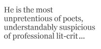

He tiptoes though the plashy fen. A bearded weirdie with thickish glasses and a butterfly net, in quest of the fleeting moment. He pauses, he freezes, he strikes! He holds his prey up to the light, peering at it closely, turning it this way and that to uncover the latest glittering examples of government doublethink and corporate bullshit.
That’s how some people see John Whitworth, the winner of so many one-off competitions in the UK’s up-front underground press. But I happen to know there’s a lot more to him than that, so I’m writing this to tell you about it.
First, though, there’s the vexed question of what to call him. Using his first name sounds luvvie-like and twee, while using only his surname is to employ a literary convention that distances the writer from the subject and implies a sort of po-faced superiority. I’m his friend, writing here as a fellow-poet so neither really fits the bill, but between us over the years we have developed a convention of referring to our peers with a definite article — the Murray, the Chambers, the Sweeney — and so I shall call him the Whitworth. It implies camaraderie and respect.
They say a girl always remembers her first bloke. I first met the Whitworth when I was a poetry virgin, embarking on my first public reading with my first volume clutched in my hand. It was in Bournemouth, a British byword for gentility and restraint. The line-up was me and him and UA Fanthorpe. I was terrified and he generously volunteered to read first (usually the newbie’s spot). He had come equipped with a brand new blue shirt for the occasion and as he stepped up to the firing line I saw that there were a couple of pins left dangerously in the fabric. I did the Androcles thing and, true to mythology, we’ve been mates ever since.
It was on that occasion that he gave me a piece of good advice. “Don’t just do a string of poems. Poetry is like Marmite — spread it thin and it’s lovely but nobody likes it in bloody great dollops.”I have built every performance since then on the strength of that advice and have always remembered to include plenty of buttered toast.
He read that day from Landscape with Small Humans (Peterloo, 1993). I bought it from him after the reading (as you do) and was enchanted. It is still my favourite of all his books. In it he has a poem “The New Elizabethans”, which tells of a little boy’s puzzled participation in what the adults in his life perceived as a liminal moment — the end of a King and the beginning of a Queen. At the end of the poem, his mother dries her eyes and does her duty, as Royalty must — restoring normality with “toast and Marmite for her boys”. But it wasn’t until a couple of months ago, when he emailed me asking about Heaven “will there be Cricket and Marmite and Public Libraries?” that I saw how it all fits together. The Whitworth and his poetry are all about spiritual wholeness, structure, fair play and cultural integrity. What a pity he couldn’t see the grin on my face as I wrote that as clearly as I could hear him shouting “bollocks!”
He is the most unpretentious of poets, understandably suspicious of professional lit-crit, which is, after all, a completely different use for language. He is happy to admit that most poems have a “because” and owns up to the “why” of them because he sees no need to dissemble. In the poem “Getting to Go”, he confronts the bewildering loss of his mother, her death in hospital being, for a little boy who was not allowed to visit, more like an inexplicable disappearance. His attempt to recreate in retrospect what his father was “privileged” to see is a grown man’s way of dealing with the betrayal. I can’t read it without feeling the pain and appreciating the process. He has taken the original grief, polished and perfected it, put it down on the table and set it a-going. That’s how good poems are made.
Although his work has undergone some radical changes since LWSH, he still starts most of his poems with something that has moved him — amazed, appalled, amused or delighted him. He is not capable of the sort of deliberate detachment that underlies much post-modern output. I love him for that.
He is also an unashamed scholar. He is firmly of the opinion that people who won’t read, can’t write. His followers are people who have a working knowledge of the classics, read the newspapers, read contemporary poetry and are not offended by his occasional use of words they have not yet come across. They look them up. He trusts them to do this and he never “writes down”.
That said, though, he does have a tendency to add footnotes, although I have never found them patronising. They are in most cases almost a part of the poem — buttered toast for the Marmite, as it were. (If you have been paying attention you will understand.)
Sooner or later anyone describing the Whitworth will use the word “wit”, but they mean many different things by it. I’ll use his own definition as found in From the Sonnet History of Modern Poetry. (1998)
…And wit, which is important. Though Life’s no joke
Wit keeps them at bay, the wolves, the wolves of suicide
and madness.
Wit, like Literacy, has its uses, though it does not always do to dwell on them.
Words, though, are another matter. Poetry is made of words. Beginning of story. I have watched the Whitworth in a workshop with children, charming single words out of them, practically salivating at the echoes they create and showing them how to take charge of their power over other people’s ears. He does it himself all the time —
Oh, kiss me to the top, my bliss
O kiss me through the tenses
My jockey cock, once cock-a-hoop
Gone dainty drupe and soppy-poop
Still willy-nilly can recoup
Additional expenses
So fuck up my defences…
Of course that’s not one for the kiddies but it revels in the mouthfeel of the sounds it makes and proves my point. Bob Cobbing did the same sort of thing and people called it cutting-edge because it didn’t make sense — but in my book that meant it didn’t count.
Many of his poems are “occasional”, in that they are triggered by an immediate situation or a fleeting reference, but it’s surprising how often other occasions arise to accommodate them. He wrote “Le Tour de France en Angleterre” when such a thing was mooted. It appeared in The Whitworth Gun in 2002, but I have just sought it out
…Bring me my pump, my can of oil
My spanner and my puncture kit
My rusty, trusty British bike
Environmentally, I’m it…
to send to my son who has lately succumbed to the delights of London’s subsidised Cyclescheme. Sometimes verse is simply a superior way of saying things
He is a master of form but not a slave to it. His poems are recognisable, accessible, well wrought and sound. They are vessels crafted to hold water and they do not leak. He has no idea how proud I was when, after I’d suggested a couple of tweaks to one he showed me, he said I was his “Ezra”. Suddenly I saw myself as a bit of a Leigh Hunt (No, that’s not rhyming slang) and couldn’t resist…
John amazed me ever so
When I read his latest email —
Called me “Ezra” doncherknow
Though I’m solvent, sane and female.
Call me poser, call me dunce,
Say I’m not worth working with
But add — the Whitworth called me once
A super-smith!
I came across that the other day when I was trailing through our old correspondence. I recalled with a smile that neither Pound nor Eliot rate highly on his personal list of literary greats.This is interesting but not, I hope, significant.
The Whitworth has stated, in Being the Bad Guy (2007) that the poem “Quarks” is crucial to anyone writing a dissertation on his oeuvre. It is, he says, absolutely central to any discussion of his poetic theory. Here’s a bit of it:
…It’s not a penguin, it’s a mallemuck.
It’s not a fruit-bat, it’s a bugaboo,
It’s not varoom-varoom, it’s puck-a-puck,
It’s not a racing hamster, it’s a shrew.
It’s not a stifled scream, it’s more a cluck,
It’s not the Baroness, it’s Loobyloo.
It’s not a lovebite, it’s a bloody dunt,
It’s not an entrance, it’s an exeunt.
So do as the man says — go out. Go out and get his stuff and read it, whydon’cher?
Two poems for the Whitworth
Don’t Worry about Heaven
For John Whitworth
What GOES ON in Heaven, that’s what I want to know.
Do they have cricket and Marmite and public libraries?
— John, via email. 8.20 a.m. 8 April 07.
Oh, will there be cricket in Heaven —
The impact of missile on bat,
The sensation of play
Going on miles away
From the place in the grass where you’re sat?
Well, there’s bound to be cricket in Heaven
For isn’t it just what God meant;
Making poor flannelled fools
Follow mystical rules
For the promise of tea in a tent?
But will there be Marmite in Heaven?
Will I feel the familiar drouth
As it trammels the tongue
Like an ill-fitting bung
Till it cleaves to the roof of the mouth?
But of course there’ll be Marmite in Heaven!
Apart from its tasting divine,
They would need brewers’ yeast
At the family feast
Or they couldn’t change water to wine.
And libraries, are they in Heaven
Addressing the cultural gap?
Do they stand in the streets
Holding volumes like sweets
To enlighten the average chap?
Not libraries, dearest – but bookshops;
You can gaze at their goodies all day
But, just as on earth,
You decide what they’re worth
And you browse and you choose and you pay.
The Case for Light Verse
For John Whitworth
Beside the epic, with its long tradition
Of mythic reference and erudition,
Darling of bards po-faced and reverential,
Light verse seems horribly inconsequential.
There is no literary substance to it,
No lasting value; any fool can do it.
Take up the burden that distorts your soul,
Crack it and tip it out into a bowl;
Discard the yolk and then with merry vigour
Whip up the white and add a bit of sugar.
This is a recipe that can’t go wrong;
A little biscuit melting on the tongue,
Tickling the idiot’s fancy like a feather
Making him laugh and clamour for another.
No one expects us amiable asses
To seek to reach the peak of Mount Parnassus,
Therefore, dear heart, let us write fast and louche
And give the common man his amuse-bouche.
Write light. Let rip with a poetic fart.
That way they may conclude we have no heart
But those who really matter will know better.
Ann Drysdale was born near Manchester, raised in London, and married in Birmingham. She ran a smallholding and brought up three children on the North York Moors, and now lives in South Wales. She was a journalist for many years, writing, among other things, the longest-running by-line column in the Yorkshire Evening Post. She has won a few prizes and published several books, including a memoir, Three-three, two-two, five six. Of her four volumes of poetry from Peterloo, the most recent, Between Dryden and Duffy, appeared in 2005. A fifth collection, Quaintness and Other Offences, is scheduled for Spring 2009.